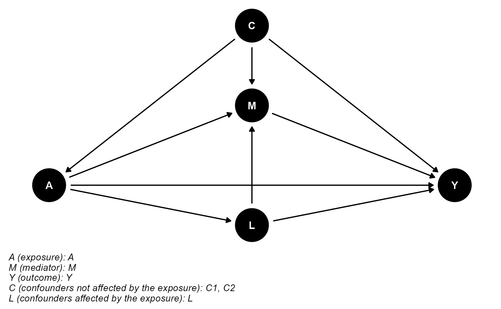

vignettes/post_exposure_confounding.Rmd
post_exposure_confounding.RmdThis example demonstrates how to use cmest when there are mediator-outcome confounders affected by the exposure. For this purpose, we simulate some data containing a continuous baseline confounder \(C_1\), a binary baseline confounder \(C_2\), a binary exposure \(A\), a continuous mediator-outcome confounder affected by the exposure \(L\), a binary mediator \(M\) and a binary outcome \(Y\). The true regression models for \(A\), \(L\), \(M\) and \(Y\) are: \[logit(E(A|C_1,C_2))=0.2+0.5C_1+0.1C_2\] \[E(L|A,C_1,C_2)=1+A-C_1-0.5C_2\] \[logit(E(M|A,L,C_1,C_2))=1+2A-L+1.5C_1+0.8C_2\] \[logit(E(Y|A,L,M,C_1,C_2)))=-3-0.4A-1.2M+0.5AM-0.5L+0.3C_1-0.6C_2\]
set.seed(1) expit <- function(x) exp(x)/(1+exp(x)) n <- 10000 C1 <- rnorm(n, mean = 1, sd = 0.1) C2 <- rbinom(n, 1, 0.6) A <- rbinom(n, 1, expit(0.2 + 0.5*C1 + 0.1*C2)) L <- rnorm(n, mean = 1 + A - C1 - 0.5*C2, sd = 0.5) M <- rbinom(n, 1, expit(1 + 2*A - L + 1.5*C1 + 0.8*C2)) Y <- rbinom(n, 1, expit(-3 - 0.4*A - 1.2*M + 0.5*A*M - 0.5*L + 0.3*C1 - 0.6*C2)) data <- data.frame(A, M, Y, C1, C2, L)
The DAG for this scientific setting is:
library(CMAverse) cmdag(outcome = "Y", exposure = "A", mediator = "M", basec = c("C1", "C2"), postc = "L", node = TRUE, text_col = "white")

In this setting, we can use the marginal structural model and the \(g\)-formula approach. The results are shown below.
res_msm <- cmest(data = data, model = "msm", outcome = "Y", exposure = "A", mediator = "M", basec = c("C1", "C2"), postc = "L", EMint = TRUE, ereg = "logistic", yreg = "logistic", mreg = list("logistic"), wmreg = list("logistic"), astar = 0, a = 1, mval = list(1), yref = 1, estimation = "imputation", inference = "bootstrap", nboot = 2)
summary(res_msm)
## Causal Mediation Analysis via the Marginal Structural Model
##
## Direct counterfactual imputation estimation with
## bootstrap standard errors, percentile confidence intervals and p-values
##
## Estimate Std.error 95% CIL 95% CIU P.val
## Rcde 0.503551 0.072877 0.482294 0.580 <2e-16 ***
## rRpnde 0.544418 0.034763 0.523317 0.570 <2e-16 ***
## rRtnde 0.520806 0.056904 0.499153 0.576 <2e-16 ***
## rRpnie 0.986785 0.002898 0.993957 0.998 <2e-16 ***
## rRtnie 0.943987 0.044326 0.948063 1.008 1
## Rte 0.513923 0.058229 0.496137 0.574 <2e-16 ***
## ERcde -0.485202 0.070152 -0.512164 -0.418 <2e-16 ***
## rERintref 0.029620 0.035388 -0.012010 0.036 1
## rERintmed -0.017279 0.020568 -0.021039 0.007 1
## rERpnie -0.013215 0.002898 -0.006043 -0.002 <2e-16 ***
## ERcde(prop) 0.998201 0.025745 0.982045 1.017 <2e-16 ***
## rERintref(prop) -0.060937 0.073575 -0.070130 0.029 1
## rERintmed(prop) 0.035548 0.042657 -0.015782 0.042 1
## rERpnie(prop) 0.027188 0.005172 0.005019 0.012 <2e-16 ***
## rpm 0.062736 0.047829 -0.010763 0.053 1
## rint -0.025389 0.030918 -0.028602 0.013 1
## rpe 0.001799 0.025745 -0.016634 0.018 1
## ---
## Signif. codes: 0 '***' 0.001 '**' 0.01 '*' 0.05 '.' 0.1 ' ' 1
##
## Reference values:
## $a
## [1] 1
##
## $astar
## [1] 0
##
## $yref
## [1] 1
##
## $mval
## $mval[[1]]
## [1] 1res_gformula <- cmest(data = data, model = "gformula", outcome = "Y", exposure = "A", mediator = "M", basec = c("C1", "C2"), postc = "L", EMint = TRUE, mreg = list("logistic"), yreg = "logistic", postcreg = list("linear"), astar = 0, a = 1, mval = list(1), yref = 1, estimation = "imputation", inference = "bootstrap", nboot = 2)
summary(res_gformula)
## Causal Mediation Analysis via the G-formula Approach
##
## Direct counterfactual imputation estimation with
## bootstrap standard errors, percentile confidence intervals and p-values
##
## Estimate Std.error 95% CIL 95% CIU P.val
## Rcde 0.5049413 0.0262100 0.4440074 0.479 <2e-16 ***
## rRpnde 0.5263524 0.0747399 0.4411446 0.542 <2e-16 ***
## rRtnde 0.5133427 0.0448688 0.4427110 0.503 <2e-16 ***
## rRpnie 0.9676549 0.0400043 0.9480197 1.002 1
## rRtnie 0.9437376 0.0928911 0.8805322 1.005 1
## Rte 0.4967385 0.0248239 0.4434923 0.477 <2e-16 ***
## ERcde -0.4692424 0.0591338 -0.5579752 -0.479 <2e-16 ***
## rERintref -0.0044052 0.0156061 -0.0006116 0.020 1
## rERintmed 0.0027313 0.0099118 -0.0130102 0.000 1
## rERpnie -0.0323451 0.0400043 -0.0519407 0.002 1
## ERcde(prop) 0.9324029 0.0654654 0.9145999 1.003 <2e-16 ***
## rERintref(prop) 0.0087533 0.0297834 -0.0389798 0.001 1
## rERintmed(prop) -0.0054272 0.0189231 -0.0005091 0.025 1
## rERpnie(prop) 0.0642710 0.0763257 -0.0030779 0.099 1
## rpm 0.0588438 0.0952488 -0.0035871 0.124 1
## rint 0.0033262 0.0108604 -0.0140658 0.001 1
## rpe 0.0675971 0.0654654 -0.0025528 0.085 1
## ---
## Signif. codes: 0 '***' 0.001 '**' 0.01 '*' 0.05 '.' 0.1 ' ' 1
##
## Reference values:
## $a
## [1] 1
##
## $astar
## [1] 0
##
## $yref
## [1] 1
##
## $mval
## $mval[[1]]
## [1] 1